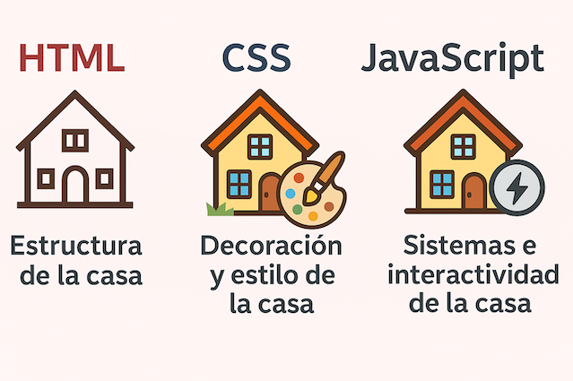

Desarrollado por Pablo2
Son los tres pilares fundamentales del desarrollo web que trabajan juntos
para crear páginas web dinámicas e interactivas.
HTML se encarga de la estructura y el contenido, CSS del
diseño y la presentación, y JavaScript de la interactividad y la
funcionalidad.
Es el lenguaje de marcado que define la estructura y el contenido de una pagina web. Utiliza etiquertas para delimitar diferentes elementos como parrafos, encabezados, imagenes, enlaces, etc.

Es un lenguaje de estilos que se utiliza para controlar la presentación de una página web. Permite definir aspectos como los colores, fuentes. tamaños, márgenes, etc.. de Ing alemantas HTML.

Es un lenguaje de programación que permite agregar funcionalidad interactiva a una página web. Permite manipular elementos HTML. responder a eventos del monarin, realizar cálenins etc.

Estructura de la casa.
Es como los cimientos, las paredes, techos, y distribución de las
habitaciones.
HTML define la estructura básica de una página web: qué elementos hay
(título, párrafos, botones, imágenes, etc.), pero sin preocuparse por
cómo se ven.
Decoración y estilo de la casa.
Es la pintura de las paredes, el tipo de piso, los muebles, las
cortinas, el diseño de la cocina.
CSS se encarga de cómo se ve la página: colores, fuentes, márgenes,
alineaciones, estilos responsivos... lo visual.
Los sistemas eléctricos y electrónicos de la casa.
Es como los interruptores que encienden luces, las puertas
automáticas, el termostato inteligente.
JavaScript añade funcionalidad e interactividad haciendo que pasen
cosas como respuesta a un evento.

"Los tres lenguajes son esenciales para el desarrollo web, y cada uno juega un papel crucial en la creación de páginas web modernas y funcionales."